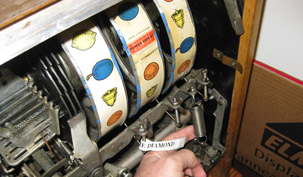
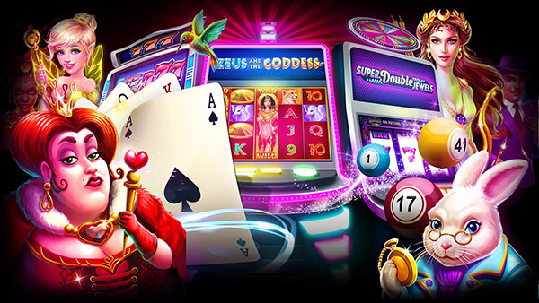

Une femme de 46 ans remporte un jackpot progressif sur son smartphone
aujourd’hui à 11 h 29 EDT
Michelle E. Richardson, une femme de 46 ans originaire de Paris, a décroché le jackpot progressif dans un casino en ligne en utilisant simplement son smartphone !
En quoi consiste cette application ?
Slotomania est une application de casino sur iOS qui permet jouer aux jeux de machine à sous les plus populaires et de remporter le jackpot.
C’est une application de divertissement tout-en-un dans laquelle il n’est pas nécessaire de miser de l’argent pour gagner.
Même si cela semble trop beau pour être vrai, c’est la réalité, tout est gratuit et sans engagement. C’est pourquoi Slotomania fait fureur en ce moment dans le monde entier.

Mais est-ce légal ?
OUI, absolument ! Jouer sur Slotomania est tout à fait légal, ce qui explique son grand succès.
Naturellement, les vrais casinos ne sont pas ravis de la situation et tentent d’empêcher le public d’accéder à Slotomania. L’application pourrait bientôt être bannie, mais dès lors que vous l’avez installée, vous n’avez plus à vous inquiéter.
Décrochez le jackpot et jouez à plus de 100 machines à sous gratuites avec Slotomania
Combien cela va-t-il me coûter ?
Vous pensez sans doute que jouer avec cette application va vous coûter cher… faux ! Slotomania offre en ce moment des tours de machine à sous entièrement gratuits. Aucun paiement à effectuer, pas d’abonnement, pas de frais mensuels.
Comment ça marche ?
Maintenant que vous en savez un peu plus sur cette excellente appli, vous allez voir à quel point il est facile de commencer à gagner dès aujourd’hui. Il vous suffit de suivre ces 3 étapes :
-
Étape 1 : Téléchargez l’application Slotomania et installez-la sur votre appareil.
-
Étape 2 : Ouvrez l’appli. Vous obtenez immédiatement vos tours gratuits.
-
Étape 3 : Appuyez sur votre jeu de machine à sous préféré et commencez à gagner gros !
Où dois-je aller pour commencer ?
Vous pouvez télécharger directement sur le magasin applicatif officiel en appuyant ici.
Les machines à sous Slotomania offrent aussi toutes sortes d’avantages intégrés qui progressent et se cumulent chaque fois que vous décrochez le jackpot Vegas. Une vraie machine à gagner !
JOUEZ MAINTENANT ! »